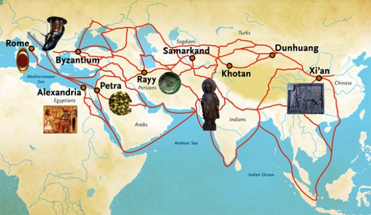
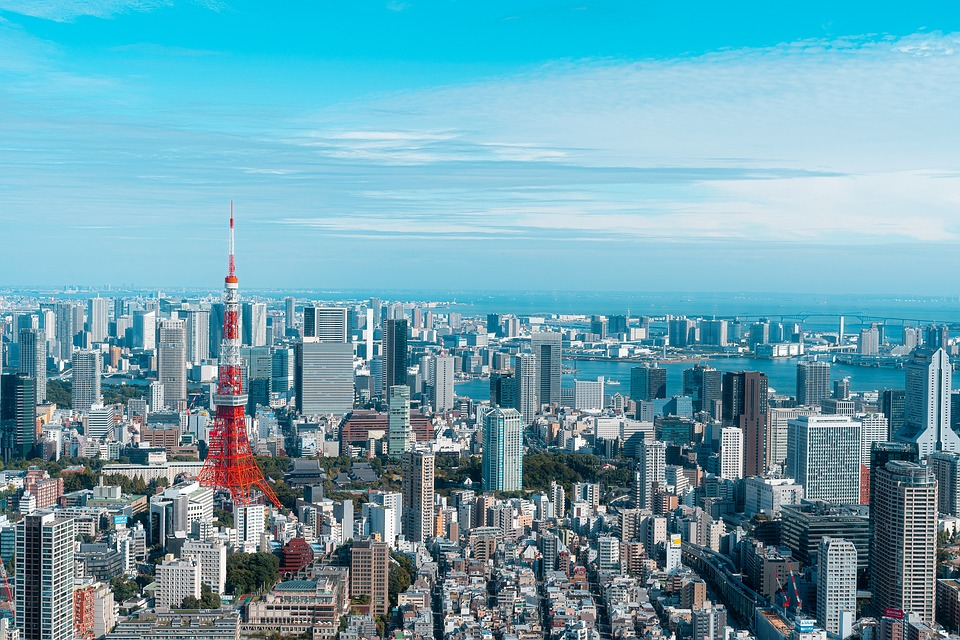

Ázsia a Föld legnagyobb kontinense, területe körülbelül 44,58 millió négyzetkilométer, lakossága meghaladja a 4,7 milliárd főt. Több tucat ország található itt, köztük Kína, India, Japán, Indonézia és Oroszország ázsiai része. A kontinens rendkívül sokszínű kulturálisan, vallásilag és természeti tájai szempontjából is.
Történelem

Ázsia ősidők óta a civilizáció bölcsője: itt alakultak ki a világ legrégebbi kultúrái, például a kínai, az indiai és a mezopotámiai civilizációk. A vallások többsége – mint a buddhizmus, hinduizmus, iszlám – szintén Ázsiából ered. Az elmúlt évszázadok során számos birodalom és háború alakította a kontinens arculatát.
Fontos folyók Ázsiában
Ázsia nagy folyamai a mezőgazdaság és a történelem szempontjából is meghatározók voltak.
Folyó
Hossz (km)
Ország(ok)
Jangce
6 300
Kína
Gangesz
2 525
India, Banglades
Mekong
4 350
Kína, Laosz, Vietnam
Mai Ázsia

Napjainkban Ázsia a világ gazdasági motorja. Kína és India hatalmas gazdasági és politikai erővel bír. A régióban gyors urbanizáció figyelhető meg, miközben néhány térség (pl. Közép-Ázsia) még mindig fejlesztés alatt áll. Ázsia továbbra is kulcsfontosságú szereplő a globális kereskedelemben és technológiai fejlődésben.
Gasztronómia
Az ázsiai konyha rendkívül változatos és gazdag. Kiemelkedő a kínai, japán, indiai, thai és vietnámi konyha. A fűszerek, friss alapanyagok és hagyományos főzési technikák – mint a wokban sütés vagy gőzölés – különleges ízvilágot teremtenek. Népszerű ételek: sushi, curry, pho leves, dim sum.